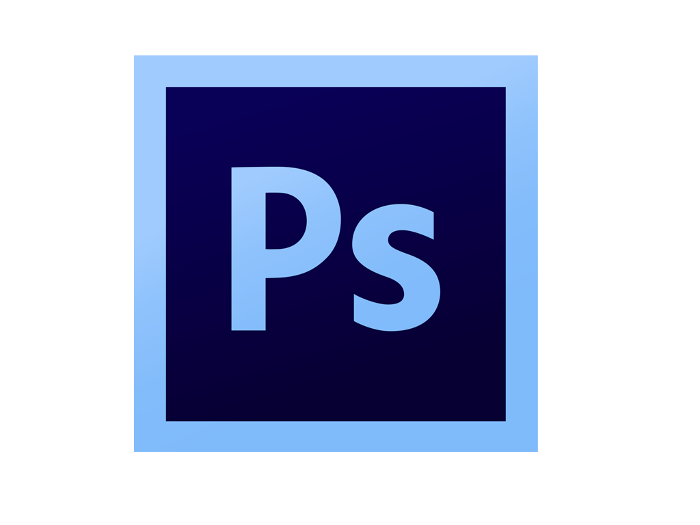
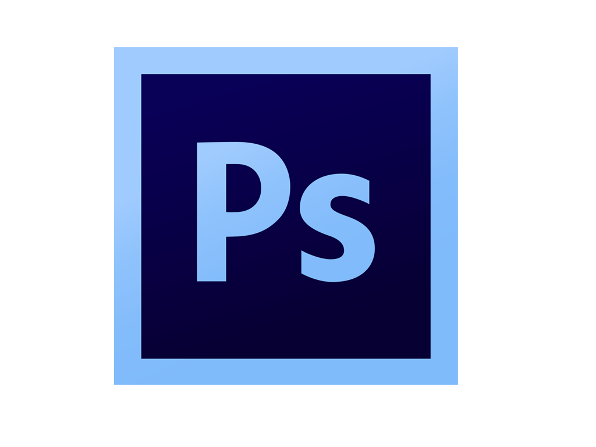

Skills
 

Interests

For my study I work with PowerPoint and Word on a daily basis and have learned to use most of the available features to make my work more efficient and appealing. Although not using Excel as often I can still use it to store, manipulate, analyse data.
Teamwork has been an important part of my studies, and I have worked with people in an intercultural context in school, private, and professional life. Additionally, during my time abroad in Lithuania I had to work and live in a different culture entirely and was able to work with and help other international students work in this new context.
Over the past years I have honed the skill of acquiring and analysing information for projects. Gathering information ranging from google analytics data, to published works both inside and outside my field of study. Afterwards, analysing the data to make decisions on what to do with a project, setting up a plan of action, or monitoring the effects of a project.
I have worked with Google Analytics in the past for work, and for school.
I have obtained the certificates from google for Google Digital Garage, Analytics, and Ads.
The certificates can be found in the link below.
(Download Google Digital Garage Certificate)
(Download Google Analytics Certificate)
(Download Google Ads Certificate)
Photoshop and Illustrator were part of my Computer Graphics course during my Erasmus+ study in Lithuania. I already had some basic knowledge of the programs, which was extended by the course. And I have used the tools since then to make and modify images, including the images found on this website.
My English is at a C2 level according to the CEFR system.
Almost all of my professional communication and writing has been done in English over the past 4 years.
(See certificate)
My Dutch in on a native level,
Programming has had my interest for a while, starting off with HTML, CSS and JavaScript. During my Erasmus+ study I learned how to work with “C”, and out of curiosity I decided to do an online course on Python. The problem solving, and puzzle aspects are what grabbed me most about programming initially. This website serves as a demonstration of this interest, since it was built from scratch
I have been a gamer for as long as I can remember, growing up with the games and consoles from Nintendo, from the NES to the Switch. As the years went on I also started gaming on pc. My favourite genres are mascot platformers, RPG’s of all varieties and (real-time) Strategy games.
I taught myself how to edit video using Sony Vegas, I mainly used to record and edit videos to share with my friends for fun. Additionally, I edited together a couple of videos for a small reggae band. Although, the band have lost their online presence, a copy of the video still exists (here)